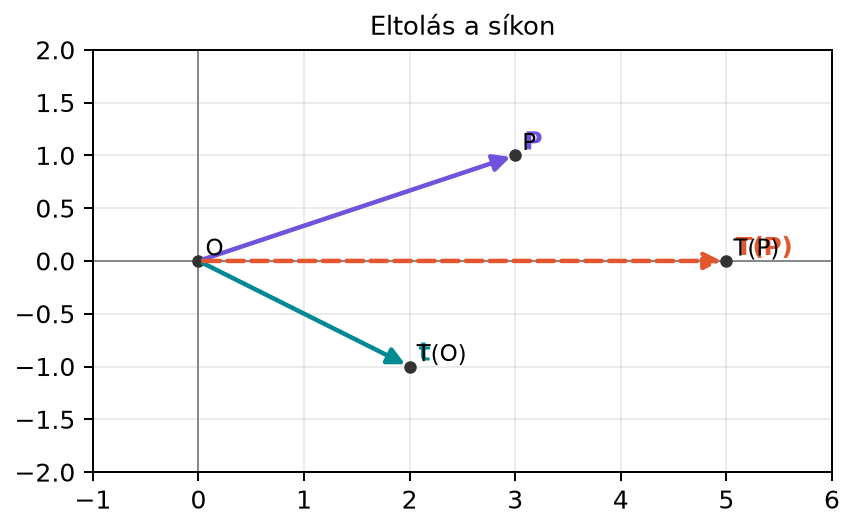

Az előző alfejezetekben a mátrixszal való szorzást mint lineáris leképezést ismertük meg. Egy ilyen leképezés például forgat, nyújt, tükröz vagy nyír, de mindegyiknek közös tulajdonsága, hogy az origó képe az origó marad. A gyakorlatban azonban gyakran szükség van arra, hogy egy alakzatot ne csak átformáljunk, hanem el is toljunk a síkban vagy a térben.
Gondoljunk egy számítógépes grafikai jelenetre: egy modellt először méretezünk, utána elforgatunk, végül eltolunk a megfelelő helyére. Egy neurális háló sűrű rétegében sem elég a bemenetet a súlymátrixszal megszorozni; egy konstans eltolás is kell, hogy a réteg rugalmasabban tudjon döntési határokat tanulni. Ezt az eltolást is tartalmazó leképezést affin leképezésnek nevezzük.
Vegyük a síkon az
eltolást. Ez minden ponthoz hozzáadja a vektort. Az origó képe , a pont képe . Az eltolás tehát az egész síkot elcsúsztatja, az origót is elmozdítja:

Az ábra számszerűen: , , , . Mivel az origó elmozdul, ez a leképezés nem lehet lineáris. Hamarosan látni fogjuk, hogyan írható mégis fel egyetlen mátrixszorzásként.
Definíció. Legyen mátrix és vektor. Az leképezést affin leképezésnek nevezzük, ha minden vektorra
Az mátrixot a leképezés lineáris részének, a vektort eltolásvektornak (angolul bias) nevezzük. Ha , akkor éppen a korábban megismert lineáris leképezés.
A definícióból azonnal látszik, hogy az affin leképezés általában nem lineáris, mert
és ez csak akkor egyenlő a nullvektorral, ha . A lineáris leképezés egyik alapkövetelménye ugyanis az, hogy az origó képe az origó legyen.
Legyen a síkon
Ez a leképezés először irányban kétszeresére nyújt, irányban változatlanul hagy, majd az eredményt az vektorral eltolja.
Számítsuk ki a pont képét:
Az origó képe:
tehát a leképezés valóban nem lineáris.
Az affin leképezés kényelmetlensége, hogy két műveletből áll: egy mátrixszorzásból és egy vektor hozzáadásából. A homogén koordináták trükkjével ezt a két lépést egyetlen mátrixszorzássá lehet összevonni.
Az ötlet az, hogy a síkbeli ponthoz hozzáfűzünk egy harmadik, -gyel egyenlő koordinátát; elmozdulás (irányvektor) esetén ez a koordináta :
A pont és az elmozdulás megkülönböztetése azért fontos, mert a pontnak van origója, az elmozdulásnak nincs. Az affin mátrix a pontot -be, az elmozdulást -ba viszi. Két transzformált pont különbsége ezért , az eltolás kiesik; így az elmozdulásokat a lineáris rész transzformálja.
Ekkor egy -as mátrixot építünk a következő blokkos alakban:
Itt a -es lineáris rész, a -elemű eltolásvektor, az alsó sorban pedig a szerepel. A szorzás:
Az eredmény első két koordinátája éppen az affin leképezés kimenete, a harmadik koordináta pedig ismét . Ezért a homogén koordinátás mátrix ugyanazt a transzformációt valósítja meg egyetlen mátrixszorzással.
A fenti kidolgozott példában:
így
Az első két koordináta , ami megegyezik a korábbi eredménnyel.
A homogén koordináták a projektív geometriában is fontosak, de itt csak az affin transzformációk leírására használjuk őket. Általában -ben a ponthoz -es, az elmozduláshoz koordinátát fűzünk, és a transzformáció mátrixa -es lesz.
Állítás. Legyen és két affin leképezés. Ekkor a kompozíció is affin leképezés, mégpedig
Bizonyítás. Helyettesítsük be eredményét -be:
A lineáris rész tehát , az eltolásvektor pedig . Fontos, hogy az új eltolás nem egyszerűen ; a második transzformáció lineáris része hatni tud az első transzformáció eltolásvektorára is.
Ugyanez homogén koordinátákkal:
A blokkmátrixok szorzása tehát automatikusan a helyes kompozíciót adja. Ez az oka annak, hogy a számítógépes grafikában szeretik a homogén koordinátás alakot: több egymás utáni affin transzformációt egyetlen mátrixszorzással lehet elvégezni. A neurális hálóknál a rétegek közé nemlinearitás kerül, ezért ott nem a rétegek összevonására, hanem a bias beolvasztására használjuk ugyanezt az ötletet (lásd lent).
A 3D-s grafikában a pontokat gyakran négy homogén koordinátával ábrázolják: . A méretezés, forgatás és eltolás mind felírható -es mátrixszal, és a transzformációk láncolatát egyetlen kombinált mátrixszorzatként tárolják. Ha például egy modellre először egy , majd egy , végül egy mátrixot alkalmazunk, akkor a pontokra elég a
szorzatot egyszer kiszámítani, és utána minden pontra ugyanezt a kombinált mátrixot alkalmazni. Ez jelentősen gyorsítja a számítást.
Az alábbi kód a kézi példát számolja ki először közvetlenül, majd homogén koordinátákkal:
import numpy as np
A = np.array([[2, 0],
[0, 1]])
b = np.array([1, -1])
p = np.array([2, 3])
y_affin = A @ p + b
print(y_affin)
H = np.array([[2, 0, 1],
[0, 1, -1],
[0, 0, 1]])
p_h = np.array([2, 3, 1])
y_h = H @ p_h
print(y_h)
print(np.array_equal(y_affin, y_h[:2]))Várt kimenet:
[5 2]
[5 2 1]
TrueA neurális hálók egyik alapvető építőköve a dense réteg (teljesen összekötött réteg). Ennek matematikai alakja
ahol
Ez pontosan egy affin leképezés. A bias szerepe az, hogy a réteg akkor is tudjon nem nulla kimenetet adni, ha a bemenet minden eleme nulla. Bias nélkül ugyanis lenne, így a lineáris rész önmagában csak az origón átmenő hipersíkokat tudná megvalósítani. A bias eltolja ezt a hipersíkot, így a neuron vagy réteg döntési határa nem kényszerül átmenni az origón.
A bias beolvasztható a súlymátrixba a homogén koordináták mintájára. Egészítsük ki a bemenetet egy konstans koordinátával:
és a súlymátrixot a bias vektorral:
Ekkor
Batch-feldolgozásnál, ha a minták sorokban vannak, , és a réteg számítása . A beolvasztás ebben a konvencióban:
és ekkor
A pontos konvenció keretrendszerenként eltérhet, de az elv ugyanaz: a bias beolvasztásához az inputhoz egy konstans -es oszlopot, a súlymátrixhoz pedig a biasnak megfelelő sort vagy oszlopot kell fűzni.
Az affin leképezést lineárisnak nevezik. A gépi
tanulásban a
réteget gyakran „lineáris rétegnek” hívják (például a PyTorch
nn.Linear osztálya), pedig a kimenete az input affin
függvénye. A lineáris algebra szóhasználatában azonban az ilyen
leképezés általában nem lineáris, mert az origó képe nem az origó.
Helyesebb ezért „affin rétegről” beszélni, vagy különválasztani a
lineáris részt és a biast.
A homogén mátrix szerkezetét elrontják. A helyes alak
Ha valaki felcseréli a blokkokat, vagy az utolsó sorba nem a sor kerül, a szorzás nem a kívánt affin transzformációt adja. Ugyancsak fontos, hogy a ponthoz -et kell fűzni, nem -t.
A bias beolvasztásakor elmarad a konstans -es hozzáfűzése. A mátrix oszlopainak száma , ezért a bemenetnek is eggyel több komponensűnek kell lennie. Ha az input változatlan marad, a mátrixszorzás shape-hibát ad.
Affin leképezések kompozíciójánál az eltolásvektorokat egyszerűen összeadják. A helyes kompozíció eltolásvektora , nem . A mátrix ugyanis az első transzformáció eltolásvektorára is hat. Homogén mátrixok szorzásakor ez automatikusan helyesen jön ki.
Fogalmi ellenőrzés. Adj meg egy olyan affin leképezést -ben, amely lineáris, és egy olyat, amely nem lineáris. Indokold a választ.
Kézi számolás. Adott
Számítsd ki -t, és írd fel a homogén koordinátás -as mátrixot.
Írj NumPy-kódot, amely felépíti a két affin transzformáció homogén mátrixát, a szorzatukkal kiszámítja a homogén mátrixát, és ellenőrzi az pontra, hogy a közvetlen kompozíció ugyanazt adja.
mert itt , tehát a leképezés alakú, és teljesíti a linearitás feltételeit. Nem lineáris affin leképezés például
mert az origó képe .
Ezután hozzáadjuk az eltolást:
A homogén mátrix:
import numpy as np
A = np.array([[1, 0], [0, 2]])
b = np.array([1, 0])
C = np.array([[0, -1], [1, 0]])
d = np.array([0, 3])
def hom(A, b):
n = A.shape[0]
H = np.zeros((n + 1, n + 1), dtype=int)
H[:n, :n] = A
H[:n, n] = b
H[n, n] = 1
return H
Hf = hom(A, b)
Hg = hom(C, d)
H_comp = Hg @ Hf
print("Hf =\n", Hf)
print("Hg =\n", Hg)
print("H_comp =\n", H_comp)
x = np.array([1, 0])
y1 = C @ (A @ x + b) + d
y2 = (H_comp @ np.append(x, 1))[:2]
print("y1 =", y1)
print("y2 =", y2)
print(np.array_equal(y1, y2))Várt kimenet:
Hf =
[[1 0 1]
[0 2 0]
[0 0 1]]
Hg =
[[ 0 -1 0]
[ 1 0 3]
[ 0 0 1]]
H_comp =
[[ 0 -2 0]
[ 1 0 4]
[ 0 0 1]]
y1 = [0 5]
y2 = [0 5]
TrueAz affin leképezés alakú, ahol a lineáris rész, az eltolásvektor. Az eltolás miatt az affin leképezés általában nem lineáris, mert az origó képe nem az origó. Homogén koordinátákkal a ponthoz -es, az elmozduláshoz koordinátát fűzünk; az affin mátrix a pontot , az elmozdulást alakba viszi. A transzformációt egyetlen
mátrixszal írjuk le. Affin leképezések kompozíciójának lineáris része , eltolása pedig ; ez homogén mátrixok szorzásaként automatikusan adódik. A neurális hálók dense rétege , ahol a bias beolvasztható a súlymátrixba egy konstans -es inputkoordináta hozzáadásával.